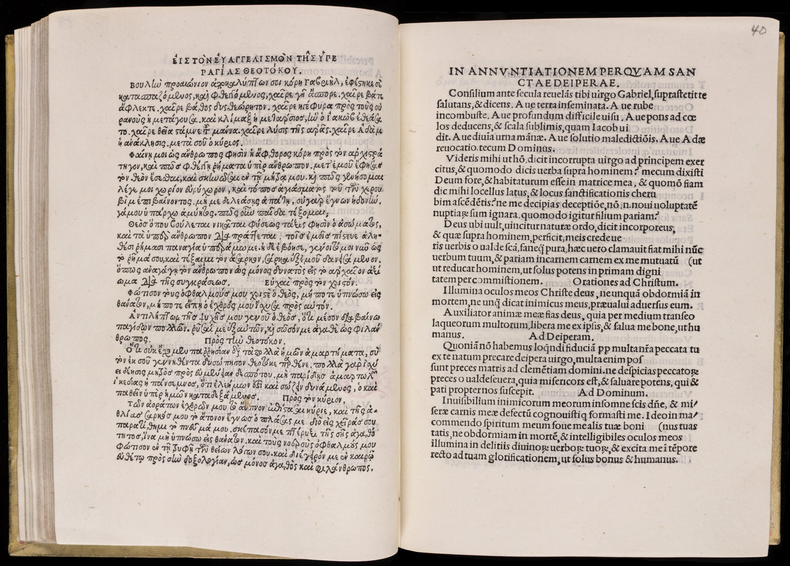

The Clergy in the Medieval Church
Print had been an integral part of the clergy-laity relationship in the medieval church. Almost immediately after Gutenberg’s work appeared, church officials recognized the medium’s ability to improve the spiritual service it provided. As such, the Roman Church was one of the key supporters of the new technology.

{kind=link}
Contemporaries agreed that printing could make better and more accurate texts, and the medieval Church was eager to use it to try to standardize its liturgy throughout Europe. Early printers found easy work printing Latin liturgical material (psalters, missals, prayer books, etc.) for churches and monasteries that had once freely incorporated local customs and variations. By the later 15th century, the Greek Orthodox liturgy also entered print. Orthodox clergy who came to the West after the fall of Constantinople in 1453 helped printers in Italy make the first editions of their liturgical works. Because these important editions were not always identified as liturgy, they were not readily utilized. These important editions came about in part because of the humanist desire to “go back to the earliest sources” (ad fontes), for sacred as well as secular literature.

Print could also facilitate the transactional relationship between clergy and laity. We can see this best in the papal indulgence, a certificate of a spiritual benefit (e.g., forgiveness of sin or a reduction of one’s time in purgatory) given in return for some sort of service rendered to the Church. By the 15th century, paying money was service enough. Selling indulgences became a major source of revenue for the late medieval Church, funding everything from church construction to universities to wars against the Turks. The practice was enthusiastically supported by laypeople, who were eager to buy these physical records of spiritual relief for departed loved ones. Printers liked them too; indulgences were major orders that were easy and inexpensive to make, and that guaranteed a profit. For all these reasons, indulgences were an ever-present, and nearly always welcome, part of the medieval church.
{kind=link}
{kind=link}
Comments